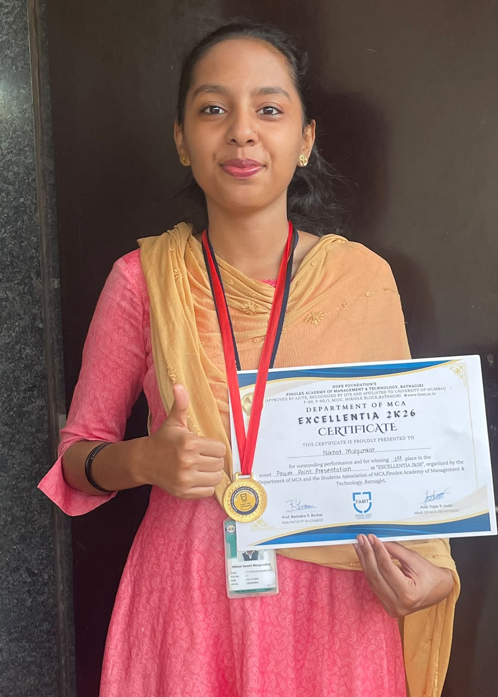
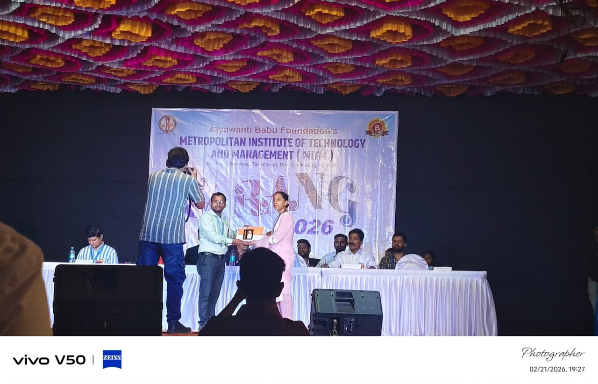
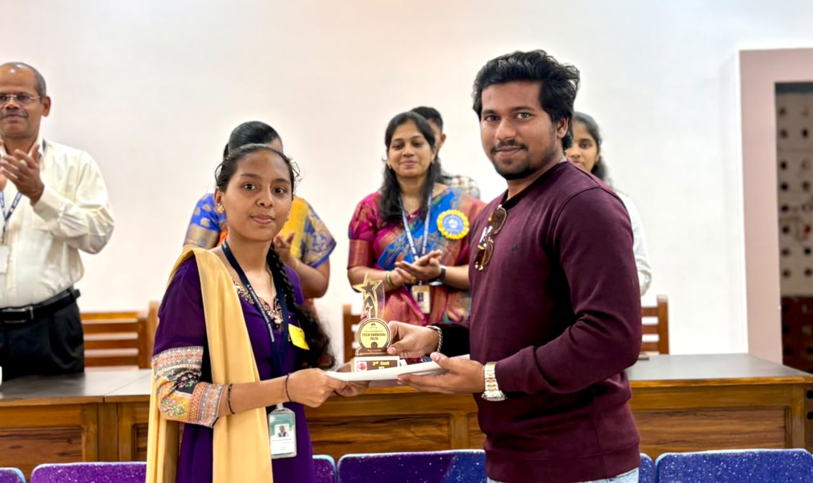
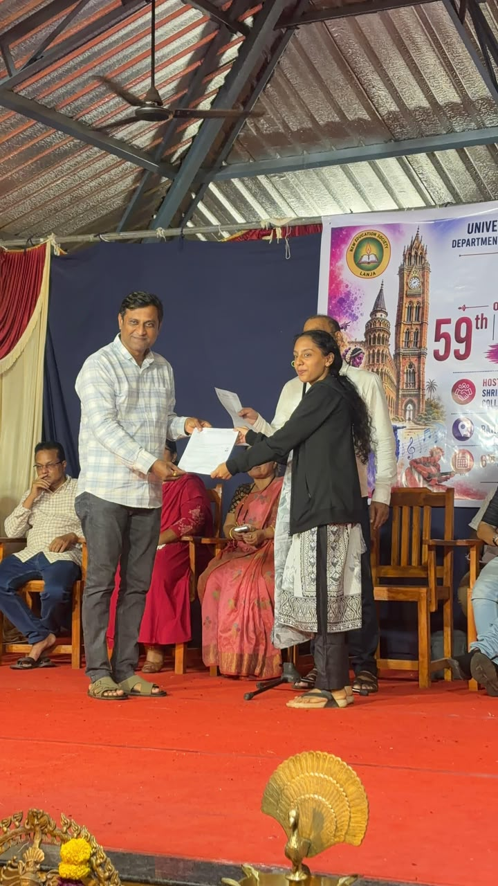
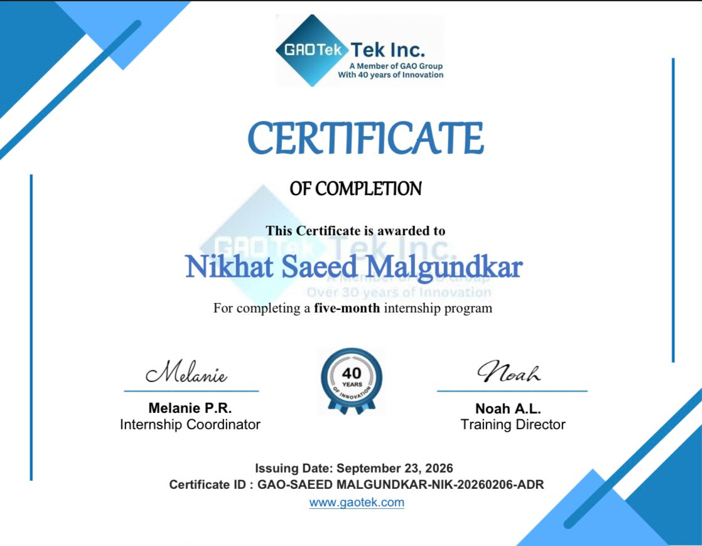
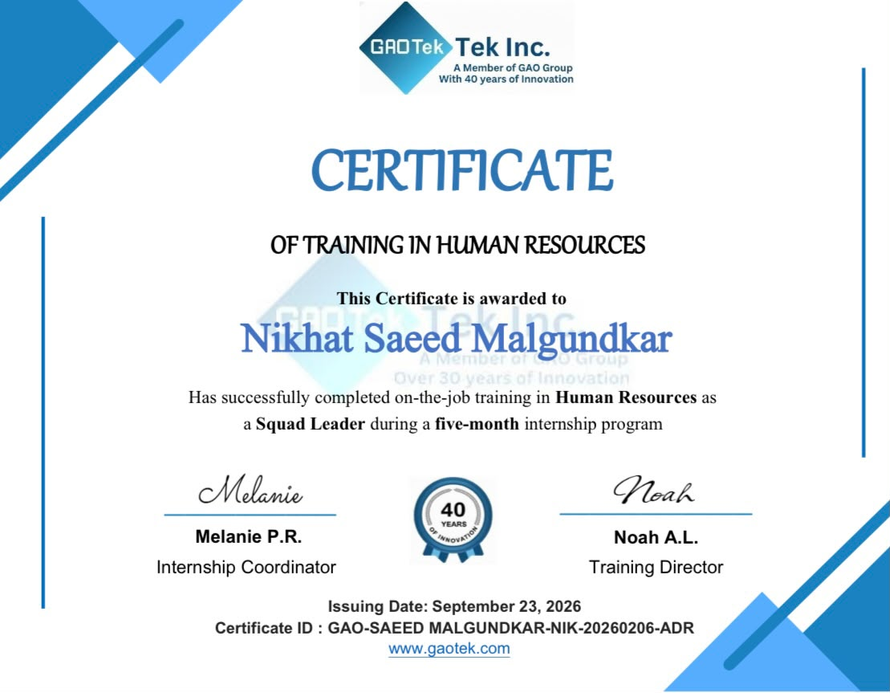
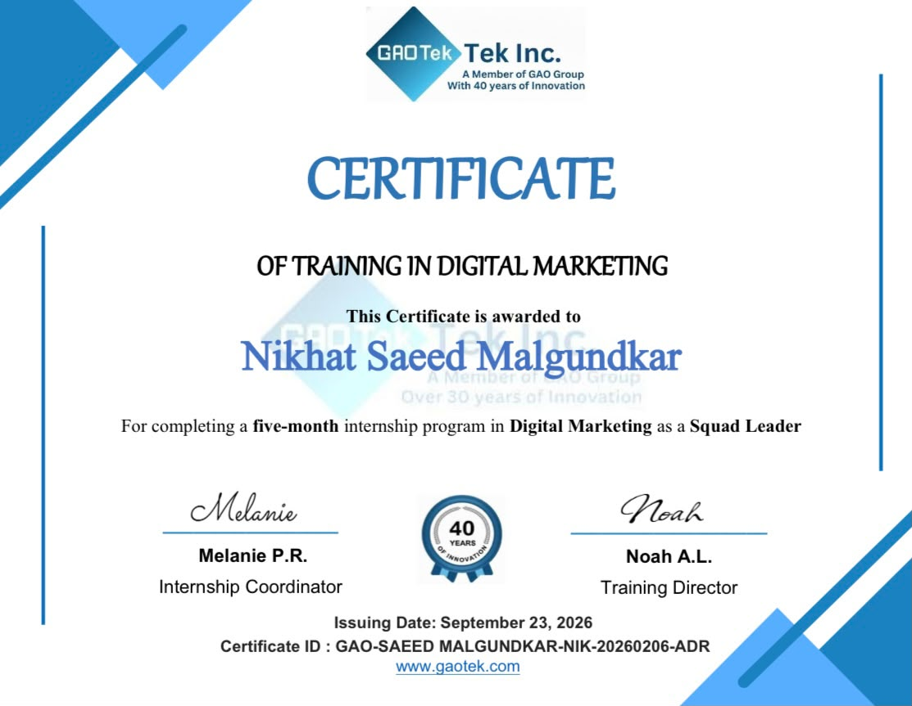
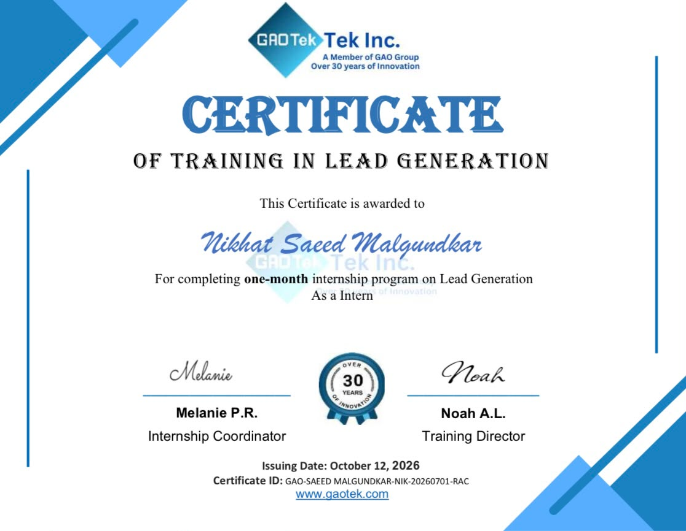

About Me
A little introduction to my professional journey.
Building a Career in Human Resources
I am a second-year B.Sc. Computer Science student with a strong interest in Human Resources, Talent Acquisition and Recruitment Operations.
Through my experience at GAO Tech, I have gained practical exposure to candidate sourcing, resume screening, interview coordination, onboarding support and team management.
My journey from HR Intern to HR Squad Leader helped me develop communication, leadership, coordination and problem-solving skills.
I enjoy working with people, organising processes and contributing to a positive recruitment experience.
B.Sc. Computer Science
S. P. Hegshetye College, Ratnagiri
Second Year5+ Months
HR & Team Coordination Experience
Human Resources
Talent Acquisition & HR Operations
Ratnagiri
Maharashtra, India
Professional Experience
Practical experience in recruitment, team coordination and lead generation.
HR Intern → HR Squad Leader
GAO Tech
Progressed from HR Intern to HR Squad Leader, supporting recruitment activities and team operations.
- Sourced candidates through LinkedIn and recruitment platforms.
- Screened resumes and coordinated interviews.
- Participated in approximately 25–30 interviews and contributed to 23 hires.
- Managed candidate follow-ups and recruitment records.
- Supported onboarding, induction and intern training.
Assistant Squad Leader – Online Reputation Management
GAO Tech
Supported team coordination and monitored assigned responsibilities.
- Coordinated team activities and monitored assigned tasks.
- Communicated updates and escalated issues when required.
- Supported team coordination and online reputation-related activities.
Data Mining Intern – B2B Lead Generation
GAO Tech
Worked on B2B prospect research and lead data organisation.
- Researched potential B2B prospects using Apollo.io.
- Identified managers, sales leaders, founders and CEOs.
- Organised lead data in Microsoft Excel.
- Removed duplicate records and filtered unverified email addresses.
Skills & Expertise
Combining people skills with technical knowledge.
HR & Recruitment
- Talent Acquisition
- Candidate Sourcing
- Resume Screening
- Interview Coordination
- Candidate Follow-ups
- Onboarding Support
- HR Operations
Leadership & Management
- Team Coordination
- Team Leadership
- Intern Training
- Communication
- Problem Solving
- Task Monitoring
Technical Skills
- Microsoft Excel
- Microsoft Office
- Google Forms
- Google Sheets
- Data Management
- HTML & CSS
Tools & Platforms
- Apollo.io
- Microsoft Teams
- Google Workspace
- AI Recruitment Tools
Achievements
Recognising my participation and accomplishments beyond academics.

Project Idea Presentation
Excellencia 2K26 – FAMT

National-Level PPT Competition
MITM

State-Level PPT Competition
Tech Carnival 2K26 – ASP

IKS Speech Competition
Mumbai-Level Final
Certifications
Professional training and learning milestones.

VIEW CERTIFICATE ↗Internship Completion Certificate
GAO Tech
Professional Internship
VIEW CERTIFICATE ↗HR On-the-Job Training
GAO Tech
Human Resources
VIEW CERTIFICATE ↗Digital Marketing Training
GAO Tech
Squad Leader Training
VIEW CERTIFICATE ↗Data Mining & Lead Generation
GAO Tech
B2B Lead GenerationProjects & Practical Work
Practical applications of HR knowledge and technical skills.
HR Recruitment Tracker
A planned Excel-based tracker to organise candidate information, interview stages, recruitment status and follow-ups.
HR Analytics Dashboard
A planned dashboard to present recruitment data, hiring progress and candidate statistics visually.
B2B Lead Generation
Practical experience researching B2B prospects using Apollo.io, organising lead information and filtering duplicate and unverified email records.
Leadership & Responsibilities
Experiences that helped me develop confidence and responsibility.
HR Team Leadership
Progressed to HR Squad Leader and supported recruitment coordination, candidate follow-ups and team activities.
Training & Mentoring
Supported the training and guidance of new HR interns and team members.
Presentation & Public Speaking
Participated in academic presentations, speech competitions and public-speaking activities.
Event Coordination
Contributed as an anchor and cultural co-coordinator during college activities.
Education
My academic journey and educational qualifications.
Bachelor of Science – Computer Science
S. P. Hegshetye College, Ratnagiri
Second Year
Higher Secondary Certificate – Science
Navnirman Junior College
HSC – Science Stream
Secondary School Certificate
New English School, Kasba
SSC
Get In Touch
Open to opportunities in recruitment, talent acquisition and HR operations.
Let's build meaningful professional connections.
I am interested in exploring opportunities where I can contribute my recruitment experience, coordination skills and willingness to learn.
✉ Email Me ↗ Connect on LinkedIn📍 Ratnagiri, Maharashtra, India
People. Potential. Possibilities.
Looking forward to contributing to a team that values people and professional growth.